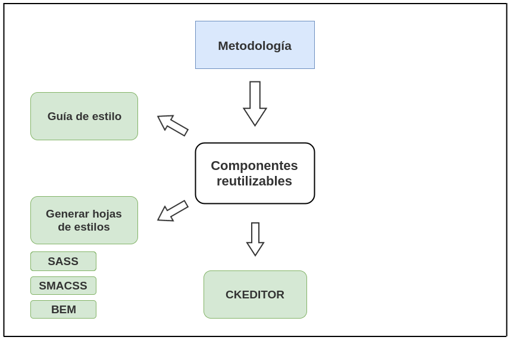

Buenas prácticas front-end:
Maquetación por componentesCristian Aliaga
drupal.org/u/crzdev - @AliagaDev
Front-end developer

¿Qué veremos?
Buenas prácticas: maquetación por componentes.
¿Qué consigue el desarrollador, el administrador/gestor de contenidos de la web y el usuario final?
¿Qué veremos?
¿Qué veremos?
¿Qué veremos?
¿Qué veremos?
¿Qué veremos?
¿Qué veremos?
¿Qué veremos?
¿Qué veremos?
Comenzamos
La importancia de las buenas prácticas.
¿Qué consigue el desarrollador?
| Hoja de estilos ligera. |
¿Qué consigue el desarrollador?
| Hoja de estilos ligera. |
| Implementación fácil. |
¿Qué consigue el desarrollador?
| Hoja de estilos ligera. |
| Implementación fácil. |
| Reinventar la rueda. |
¿Qué consigue el desarrollador?
| Hoja de estilos ligera. |
| Implementación fácil. |
| Reinventar la rueda. |
| Mantenimiento fácil. |
¿Qué consigue el desarrollador?
| Hoja de estilos ligera. |
| Implementación fácil. |
| Reinventar la rueda. |
| Mantenimiento fácil. |
| Repertorios de componentes. |
¿Qué consigue el desarrollador?
| Hoja de estilos ligera. |
| Implementación fácil. |
| Reinventar la rueda. |
| Mantenimiento fácil. |
| Repertorios de componentes. |
| Ahorra tiempo. |
| ... |
¿Qué consigue el administrador/gestor de contenidos de la web?
| Facilidad para generar nuevas secciones. |
¿Qué consigue el administrador/gestor de contenidos de la web?
| Facilidad para generar nuevas secciones. |
| Contenido basado en componentes complejos ya preparados. |
¿Qué consigue el administrador/gestor de contenidos de la web?
| Facilidad para generar nuevas secciones. |
| Contenido basado en componentes complejos ya preparados. |
| Independencia parcial del equipo de desarrollo. |
¿Qué consigue el administrador/gestor de contenidos de la web?
| Facilidad para generar nuevas secciones. |
| Contenido basado en componentes complejos ya preparados. |
| Independencia parcial del equipo de desarrollo. |
| Ahorra tiempo. |
| ... |
¿Qué consigue el usuario final de la web?
| Mejoramos la experiencia de usuario. |
¿Qué consigue el usuario final de la web?
| Mejoramos la experiencia de usuario. |
| Facilitamos el uso. |
¿Qué consigue el usuario final de la web?
| Mejoramos la experiencia de usuario. |
| Facilitamos el uso. |
| Evitamos bugs de tematizado. |
| ... |

Componentes reutilizables
¿Qué son?

<span class="btn btn--secondary">Más información</span>
.btn {
display: inline-block;
padding: .9em 2em;
text-align: center;
border: 0;
border-radius: 3px;
}
.btn--secondary {
background: none;
color: #fff;
border: 3px solid #fff;
font-size: .75em;
text-transform: uppercase;
font-weight: bold;
}
<ol class="list-highlight">
<li>Ac iaculis ut</li>
<li>Eu velit massa</li>
<li>Sit turpis tincidunt</li>
<li>Vestibulum in nisl</li>
<li>Magna sed euismod</li>
</ol>
.list-highlight {
padding: 0;
list-style: none;
...
}
ol.list-highlight {
counter-reset: counter;
}
ol.list-highlight > li {
position: relative;
...
}
Guía de estilo
Guía de estilo
Guía de estilo
Guía de estilo
Guía de estilo
Guía de estilo
Drupal Style Guide
/**
* Implements hook_styleguide().
*/
function custom_styleguide() {
$items = array(
'em' => array(
'title' => 'Emphasis',
'tag' => 'em',
'content' => styleguide_word(3),
),
);
return $items;
}
SASS
Nos permite generar css de una forma rápida, ágil y cómoda. |
| Preprocesado, genera .css a partir de .scss |
| Uso de variables. |
| Uso de mixins. |
| Anidación de selectores. |
| Herencia de estilos. |
| Operadores y funciones. |
| Funciones (también personalizadas). |
Variables
$xl: 880px;
$xxl: 1170px;
$xxxl: 1600px;
$color-primary: #512c15;
$color-secondary: white;
Mixin
@mixin transform($data) {
-webkit-transform: $data;
-moz-transform: $data;
-ms-transform: $data;
-o-transform: $data;
transform: $data;
}
div.translate {
@include transform(translate(0, -50%));
}
Anidación de selectores
.list-highlight {
a {
color: $color-primary;
}
}
.list-highlight a {
color: #512c15;
}
Anidación de selectores
.list-highlight {
padding: 0;
list-style: none;
...
&ol {
counter-reset: counter;
& > li {
position: relative;
...
}
}
a {
...
}
}
Herencia de estilos
%blue {
color: blue;
}
a {
@extend %blue;
}
Operadores y funciones.
/* 880px + 20px */
@include breakpoint($xl + 20px) {
...
}
/* #e00 */
a {
color: lighten(#800, 20%);
}
Funciones personalizadas.
@function my-calculation-function($some-number, $another-number){
@return $some-number + $another-number
}
.my-module {
padding: my-calculation-function(10px, 5px);
}
Uso
sass input.scss output.cssIntegra con:
COMPASS, GULP, GRUNT...
compass watchSMACSS
Guía de estilo.
SMACSS: Base
| Aplica a elementos únicamente. |
| Selectores de elementos. |
| Selectores no basados en clases ni IDs. |
| No debería ser necesario el uso de !important. |
| Ejemplos: body, header, headings (h1, ..., h6), enlaces (a), etc. |
body, form {
margin: 0;
padding: 0;
}
a {
color: #039;
}
a:hover {
color: #03F;
}
SMACSS: Layout
| Contienen los elementos de la web. |
| Se pueden categorizar como "major" o "minor". |
| Normalmente asociados a un selector ID o clase. |
#header, #article, #footer {
width: 960px;
margin: auto;
}
#article {
border: solid #CCC;
border-width: 1px 0 0;
}
SMACSS: Module
| Componente concreto de la web. |
| Se posicionan dentro de un componente layout. |
| Se diseña de forma aislada al resto de componentes. |
| Se pueden reposicionar sin "romper" nada. |
| Uso de selectores por clases CSS. |
| Se evitan los selectores por IDs o de elementos. |
| Clases sub-módulo para evitar !important. |
SMACSS: Module
.btn {
display: inline-block;
padding: .9em 2em;
text-align: center;
border: 0;
border-radius: 3px;
}
SMACSS: State
| Aumenta y sobreescribe el resto de estilos. |
| Se aplican normalmente a reglas de layout o module base. |
| Se pueden aplicar a reglas layout y/o módulos base. |
| Pueden indicar una dependencia JavaScript. |
| !important permitido. |
SMACSS: State
.btn {
display: inline-block;
padding: .9em 2em;
text-align: center;
border: 0;
border-radius: 3px;
}
.btn--secondary {
background: none;
color: #fff;
border: 3px solid #fff;
font-size: .75em;
text-transform: uppercase;
font-weight: bold;
}
SMACSS: Theme
| Sirven para realizar variaciones de estilos sobre los componentes. |
| Aplicamos en ficheros independientes. |
SMACSS: Theme
// in module-name.css
.mod {
border: 1px solid;
}
// in theme.css
.mod {
border-color: blue;
}
SMACSS: Cambio de estado
Representado por:
| Cambio de nombre de clase, normalmente por js. |
| Pseudo-clase. |
| Media queries. |
SMACSS: Theme
<body>
<body class="push">
SMACSS: Theme


SMACSS: Estructura archivos
sass/
|- init/ |- components/
| |- _colors.scss | |- messages/
| |- ... | | |- _messages.scss
|- base/ |- layouts/
| |- _root.scss | |- layout-3col/
| |- ... | | |- _layout-3col.scss
|- states/
|- styles.scss
¿Cómo nombramos las clases de css?
There are only two hard problems in Computer Science: cache invalidation and naming things — Phil Karlton
BEM (bloque, elemento, modificador)
BEM (bloque, elemento, modificador)
BEM
/* Block */
.block
/* Element */
.block__elem
/* Modifier */
.block__elem--mod
BEM
/* Block */
.form
/* Element */
.form__submit
/* Modifier */
.form__submit--disabled
Estilos predefinidos y coherentes
Cómo integrar estilos en ckeditor.
Cómo integrar estilos en ckeditor en Drupal 7
ckeditor.styles.js
if(typeof(CKEDITOR) !== 'undefined') {
CKEDITOR.addStylesSet( 'drupal',
[
{ name : 'Color primary', element : 'span', attributes: { 'class': 'color-primary' } },
]);
}
Seleccionamos en el perfil de ckeditor > CSS: "Usar ckeditor.styles.js del tema"
Añadimos en la barra de herramientas el botón de estilos ("Formatting styles")
Cómo integrar estilos en ckeditor en Drupal 8
Añadimos botón y configuramos el listado.
Cómo integrar plantillas en ckeditor.
Cómo integrar plantillas en ckeditor en Drupal 7
ckeditor.config.js
CKEDITOR.editorConfig = function( config ) {
config.templates_files = [ Drupal.settings.basePath +
'sites/all/themes/custom/themename/js/ckeditor.custom.templates.js' ];
};
CKEDITOR.addTemplates( 'default',
{
imagesPath: Drupal.settings.basePath + 'sites/all/themes/custom/themename/images/',
templates :
[
{
title:"Información básica",
description:"Información básica",
html:'INFORMACIÓN BÁSICA EDICIÓN
(ejemplo) 23ª edición
FINALIZACIÓN
(ejemplo) 11 de octubre de 2017
HORARIO
(ejemplo) Lunes a Jueves de 18:00 a 22:00
INICIO
(ejemplo) 07 de noviembre de 2016
DURACIÓN
(ejemplo) Un aña natural
'
},
]
});
Activamos en el perfil de ckeditor > Opciones avanzadas: "Load ckeditor.config.js from the theme path"
Añadimos en la barra de herramientas el plugin de plantillas ("Templates")
Drupal 8: Módulo contribuido CKEditor Templates
Ejemplo plantillas ckeditor
Ejemplo plantillas ckeditor

Ejemplo plantillas ckeditor
Proponer mejoras para la creación / implementación del diseño.
Un buen diseño compuesto por:
| Guía de estilo. |
| Componentes incluídos en la guía. |
| Componentes reutilizados en las diferentes pantallas. |
| Layouts compatibles con los componentes. |
Ejemplos
| Portada con teaser diferentes. |
| Layouts entre secciones diferentes. |
| Tamaños de fuente al detalle. |
| Elementos que están ahí porque "caben". |
| Evitaremos (siempre que podamos) el tematizado modo revista. |
| ... |